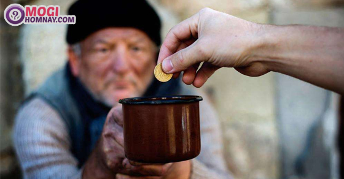
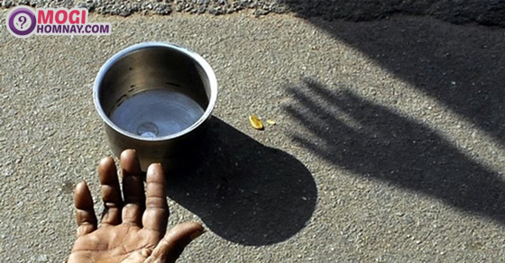

Nằm mơ thấy người ăn xin, ăn mày là điềm tốt hay xấu? Đánh đề con gì?
- Quảng Ninh: xe khách bị container đè bẹp, nhiều người thương vong
- Lào Cai: Xe cẩu lao xuống vực, 2 người mắc kẹt trong cabin
- Mơ thấy chó chết là điềm gì? Nằm mơ thấy chó chết đánh con gì?
- Đồng Nai: Người phụ nữ tử vong ngay khi va chạm với xe Ben
- Nằm mơ thấy cà phê đánh con gì? Chiêm bao thấy cà phê điềm gì?
Hiện tại bạn đang có một cuộc sống ổn định, không quá giàu sang và cũng chẳng đến mức túng thiếu, tuy nhiên đêm qua bạn lại gặp giấc mơ thấy ăn mày, ăn xin. Tại sao bạn lại có giấc mộng này? Chiêm bao thấy người ăn xin ẩn chứa điềm báo gì? Hãy theo dõi nội dung dưới đây để có lời giải đáp nhé.
1. Giải mã giấc mơ thấy ăn xin, ăn mày
Giấc mơ thấy người ăn xin có thể xuất hiện trong chiêm bao của mỗi người, đặc biệt là nếu hôm nay ngoài đường bạn bắt gặp những hình ảnh đáng thương ấy. Điều này nói lên bạn là người có tấm lòng bao dung, đồng cảm với những mảnh đời khốn khổ. Tuy nhiên, nếu thường xuyên gặp giấc mơ này thì bạn nên chú ý, đây có thể là điềm báo nhắc nhở bạn trong tương lai. Dưới đây là những giải mộng giấc mơ chiêm bao thấy người ăn mày thường gặp.
Ngủ mơ thấy người ăn mày
- Chiêm bao thấy ăn mày là phụ nữ: Giấc mơ này mang hàm ý cảnh tỉnh bạn, đừng nên quá tự cao mà quên đi mọi người, phải trân trọng và đối xử tốt với người xung quanh, họ chính là một phần giúp bạn cân bằng cuộc sống.
- Mơ thấy trẻ con đi ăn xin: Thời gian này bạn dành quá ít thời gian cho người thân, không nên quá mải mê trong việc kiếm tiền mà quên đi sự quan tâm tới con cái, người thân trong gia đình.
- Nằm mơ thấy người ăn xin là đàn ông: Điềm báo xấu về tình trạng của bạn lúc này, gánh vác quá nhiều trách nhiện và trọng trách trên vai sẽ khiến bạn cảm thấy mệt mỏi và nóng giận. Đừng quá tham lam nhận những phần việc ngoài khả năng, nó sẽ khiến cuộc sống của bạn trở nên tồi tệ hơn.
Nằm mơ thấy người ăn xin
Chiêm bao thấy ăn mày vào nhà
- Nếu bạn mơ thấy có người ăn xin vào nhà bạn và bạn không thể ngăn cản thì hãy cẩn thận, đây là điềm báo xấu về kinh tế trong gia đình trong thời gian tới. Không nên qua tin tưởng vào quyết định của một ai đó, cần có chính kiến của bản thân nếu không bạn sẽ bị mất khá nhiều tiền bạc đó.
- Mơ thấy ăn xin vào nhà xin ở: Hàm ý của giấc mộng này là sắp tới người thân của bạn có thể gặp khó khăn về vật chất hoặc tinh thần, nếu đủ điều kiện thì bạn nên mở lòng và giúp đỡ họ.
- Chiêm bao thấy ăn xin vào nhà người khác là điềm báo bạn không nên can thiệp quá sâu vào chuyện của mọi người, mặc dù có ý tốt nhưng mỗi người đều có những chuyện riêng tư không muốn chia sẻ với ai.
Ngủ mộng thấy ăn xin chết
Điềm báo giấc mơ thấy người ăn mày chết là sắp tới sẽ có những tai họa bất ngờ ập đến gia đình bạn, bạn cần một thời gian dài mới có thể giải quyết ổn thỏa những khó khăn này. Hãy cẩn thận và phòng tránh trước vì không ai có thể giúp đỡ bạn cả.
Mơ thấy nhiều ăn mày
Bạn mơ thấy rất nhiều người ăn xin trên đường thì nên cẩn thận, cuộc sống luôn có nhiều cám dỗ, nếu không tỉnh táo và tránh khỏi chúng thi sắp tới bạn sẽ mệt mỏi khi phải giải quyết những hậu quả này.
Nằm mơ thấy cho tiền người ăn xin
Giấc mơ này mang điềm báo may mắn về công danh sự nghiệp của bạn, sắp tới nếu bạn biết nắm bắt cơ hội thì chắc chắn bạn sẽ thành công.

Mơ thấy cho tiền người ăn mày
Ngủ mơ thấy người ăn mày nhưng không thấy mặt
Bạn nằm mơ thấy một người ăn xin nhưng họ lại che mặt, ngụ ý của giấc mơ này cho thấy sắp tới bạn sẽ nhận được một món quà bất ngờ, tài lộc của bạn sẽ theo món quà này mà gõ cửa, hãy chuẩn bị tinh thần đón nhận.
Mơ thấy mình trở thành người ăn mày
Chiêm bao này cho thấy hiện tại bạn đang bị tự ti về bản thân, bạn luôn cảm thấy mình không phù hợp hay xứng đáng với một ai đó hay một công việc mới. Đồng thời nếu gặp giấc mơ này thì bạn cũng không nên làm điều gì vượt quá khả năng và sự chấp nhận của bản thân và mọi người.
2. Nằm mơ thấy ăn mày đánh số mấy?
Những con số may mắn mà sổ mơ toàn tập giải mộng lô đề gợi ý khi bạn gặp chiêm bao thấy ăn mày là:
- Nằm mơ thấy ăn mày là đàn ông đánh số 86, 74
- Chiêm bao thấy người ăn mày là phụ nữ đánh số 32, 68
- Mộng thấy ăn mày là trẻ em đánh số đề may mắn 13, 07
- Ngủ mơ thấy cả một gia đình đi ăn xin đánh số 84, 52
- Mơ thấy người ăn xin ở ngoài đường rất nhiều đánh số 88, 00
- Mơ thấy người ăn mày chết đánh số 45, 37
- Chiêm bao thấy người ăn xin bị đánh đánh số 91, 10

Mơ thấy ăn mày đánh con gì?
- Năm mơ thấy người ăn xin đang đuổi theo mình đánh ngay 52, 20
- Mơ thấy người ăn mày khóc lóc van xin đánh số 66, 86
- Nằm mơ thấy người hành khất đang đánh nhau đánh số 54, 29
- Chiêm bao thấy ăn xin vào nhà đánh ngay số 00, 50
- Mơ thấy ăn xin ăn vạ trong nhà mình đánh số 52, 20
- Ngủ mơ thấy đưa người hành khất về nhà ở đánh cặp 10, 24
- Mơ thấy nhiều người ăn mày ở nhà mình đánh số 76, 12
- Mơ thấy ăn xin chết trong nhà mình đánh số 33, 27
- Mơ thấy nhà mình là nơi ở của người ăn xin, ăn mày chốt cặp 88, 53
- Mơ thấy ăn xin ở nhà người khác đánh số 06, 60
Trên đây là giải mộng giấc mơ thấy ăn xin và luận những con số đề liên quan tới chiêm bao người ăn mày này. Chúc các bạn gặp nhiều may mắn với giấc mộng của mình.
Xem thêm: Nằm mơ thấy con gián đánh con gì? Chiêm bao thấy gián là điềm báo gì?